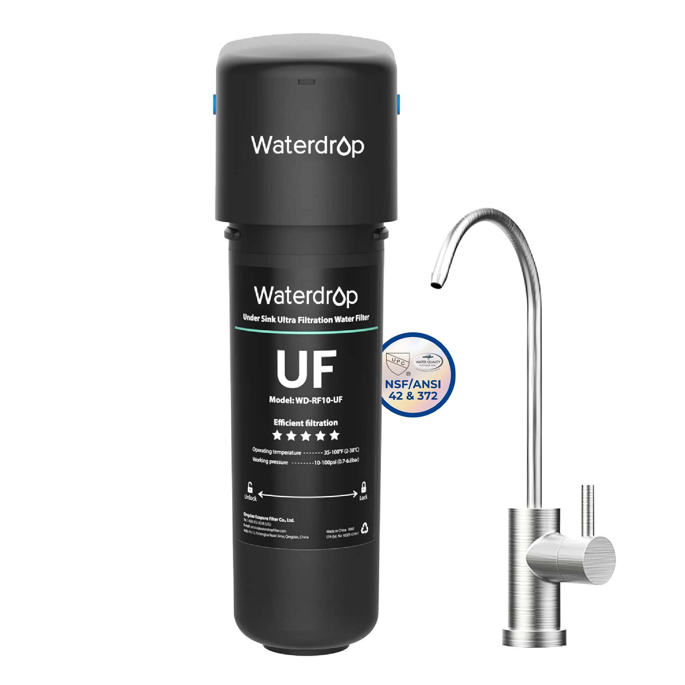
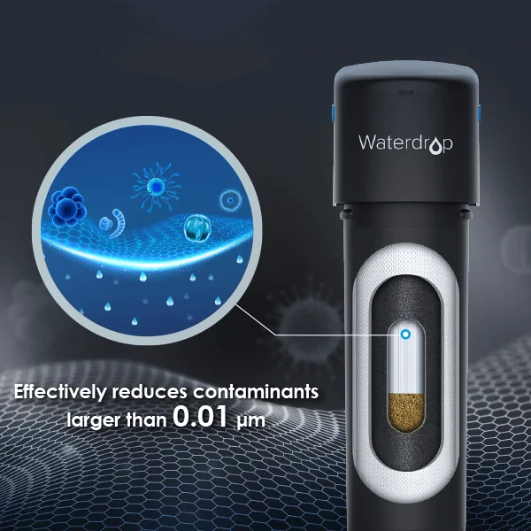
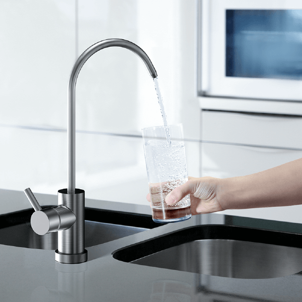
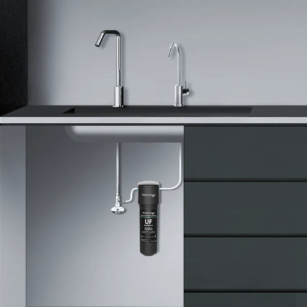

Este video está en YouTube, que usa cookies.

Fotos y precio
Agua limpia que conserva sus minerales naturales. Sin electricidad, sin desperdicio de agua y con llave de acero inoxidable incluida. Ideal si el agua de tu casa llega en buen estado y lo que quieres es mejor sabor.
· código
La oferta termina en …
Pesos colombianos · IVA incluido · equipo + valoración + instalación en Medellín + kit de bienvenida + seguimiento
Míralo
Un short de una casa real, para que veas el equipo funcionando antes de tu valoración. En Medellín lo instalan los técnicos de Nasfeco.
Este video está en YouTube, que usa cookies.
Lo que hace

Todo lo que mide más de 0.01 micras se queda en la membrana: óxido, bacterias, quistes y sedimentos.
Cada filtro dura hasta 12 meses u 8000 galones, suficiente para una familia.
Conexión giratoria sin herramientas, sin fugas y sin ensuciar el mueble.
Llave dedicada sin plomo, con acabado cepillado, incluida en la caja.

Quita lo que no quieres y conserva los minerales.

Ocupa muy poco bajo el lavaplatos y no necesita tomacorriente.
Imágenes y videos oficiales de Waterdrop Filter.
 Imagen ilustrativa · acabados por confirmar
Imagen ilustrativa · acabados por confirmarTu bienvenida
Cada instalación Nasfeco termina con este kit, sin costo adicional. Porque el agua pura también se lleva pa' la calle.
De lona, con asas verdes y el bordado Nasfeco Colombia. Pa' la finca, el mercado o el día a día.
Térmica, con la personalización Nasfeco, para llevar tu agua pura al gimnasio, a la U o a la oficina.
Verde esmeralda, con textura y el logo Nasfeco bordado en dorado.
Incluido con la X12 y con la Ultrafiltración UF. Owala es una marca de su fabricante; Nasfeco aparece como personalización.
Así instalamos
¡Hola! ¿El purificador cabe bajo mi lavaplatos? Te mando foto pues. 📷
¡Hola! Te escribe Nasfeco. Con mucho gusto revisamos tu espacio y lo cuadramos contigo.
Nos cuentas de tu casa, tu rutina y tus dudas. Te responde una persona de Nasfeco, aquí en Medellín.
Antes de instalar confirmamos la compatibilidad y te dejamos por escrito el alcance y cualquier adaptación.
Sin obras ni perforar paredes. El equipo queda ordenado bajo tu lavaplatos.
Servimos juntos el primer vaso y te mostramos cómo funciona el equipo.
Te entregamos tu kit Nasfeco: bolso, botella Owala personalizada y toalla bordada.

Seguimiento, orientación y recordatorios de mantenimiento. Siempre sabes a quién llamar.
El alcance y cualquier adaptación se confirman en tu valoración.
Qué incluye
Tu equipo + todo esto
Pesos colombianos, IVA del 19 % incluido. Instalación estándar en Medellín. Cualquier trabajo adicional se acuerda contigo antes, por escrito.
Ficha técnica
Preguntas
¿Te quedó alguna duda? Escríbenos con toda la confianza.
Pregúntanos por WhatsAppNo. Funciona con la presión de agua de tu casa, así que no gasta luz y sigue funcionando aunque se vaya la energía.
La UF retiene bacterias, óxido y sedimentos y conserva los minerales, pero no reduce las sales disueltas (TDS). Si tu agua tiene mucho sarro o quieres la máxima pureza, te recomendamos la X12.
Hasta 12 meses u 8000 galones, según tu consumo. El indicador te avisa con luz y nosotros te recordamos cuándo toca.
Sí. Es el precio final en pesos: incluye IVA, la valoración, la instalación estándar en Medellín, el kit de bienvenida y el seguimiento.
Nasfeco S.A.S., distribuidor oficial de Waterdrop Filter en Colombia, conforme al Estatuto del Consumidor (Ley 1480 de 2011).
Tu casa. Tu ritmo.
Agenda tu valoración y cuadramos contigo tu experiencia Nasfeco, paso a paso.
CookiesSolo usamos el almacenamiento imprescindible para que la web funcione. Los videos de YouTube colocan sus propias cookies, así que solo se cargan si aceptas; lo mismo con la medición de anuncios, si la activamos. Puedes cambiar tu elección desde el pie de página. Política de cookies